Codificação de Imagem por DCT e Animação
Codificação de Sinais Multimídia - Laboratório 3
Primeiramente, os trabalhos com o Google Colab e o OpenCV, Notebook foram iniciados.
Vídeo animação com Blender
A animação elaborada pelo grupo apresenta as iniciais de cada integrante sendo complementadas pelo restante do nome
Conversões entre espaços de cores
Nesta seção, foi efetuada a conversão entre espaço de cores nas fotos de cada integrante. Primeiramente, os canais foram separados e re-arranjados para formar a imagem RGB e, em seguida, houve a impressão das cores trocadas (BRG) e reais (RGB) - FOTO MONTAGEM DO GRUPO
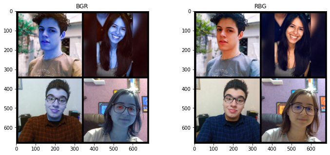
Conversão para os formatos YCrCb e HSV
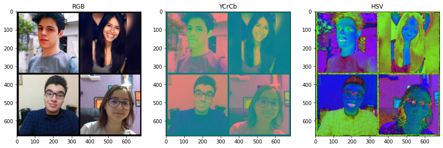Separação das Camadas RGB individualmente
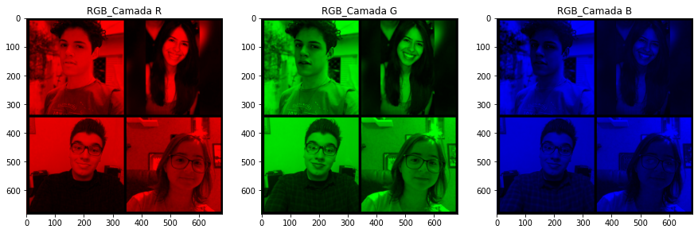
Separação dos Canais YCbCr
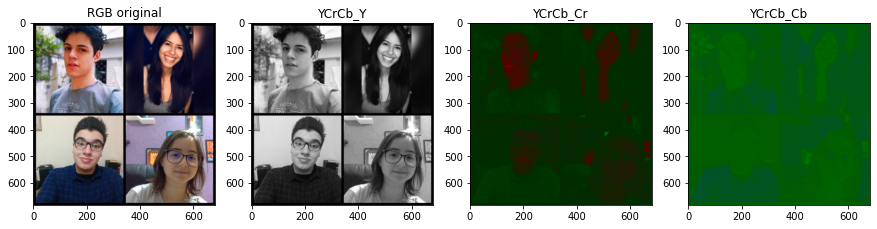
Realizando o mesmo processo em cada foto, individualmente:
Matheus
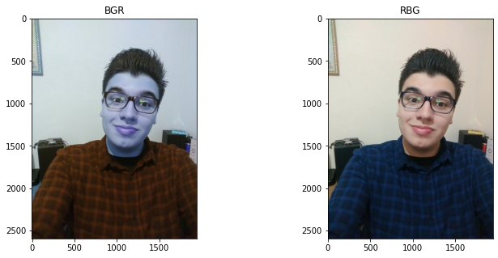
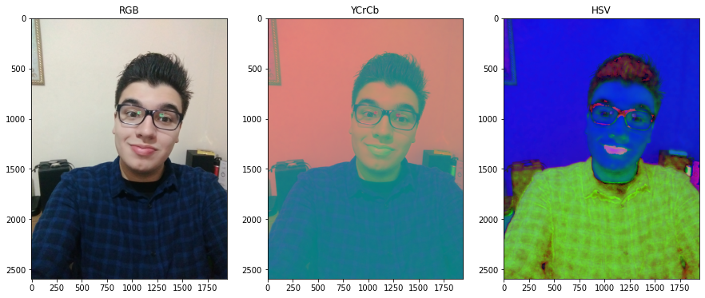
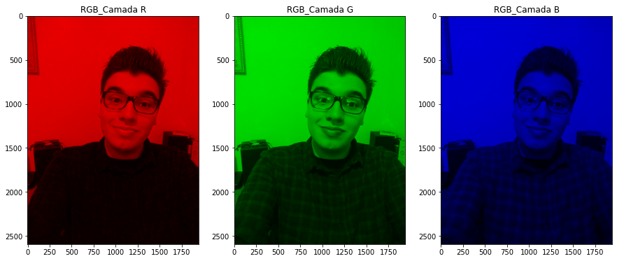
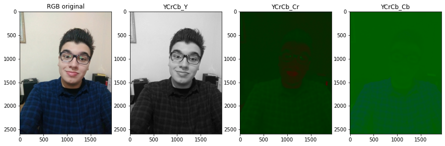
Mayara
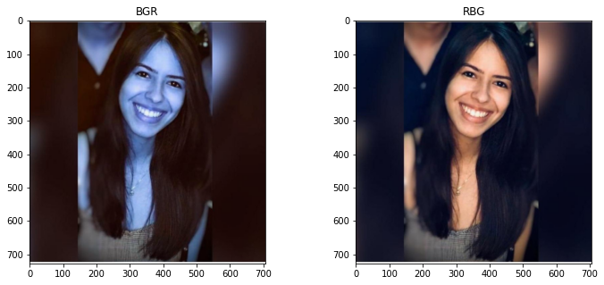
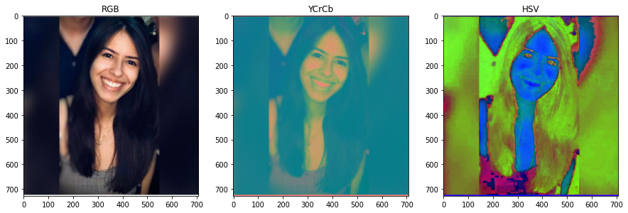
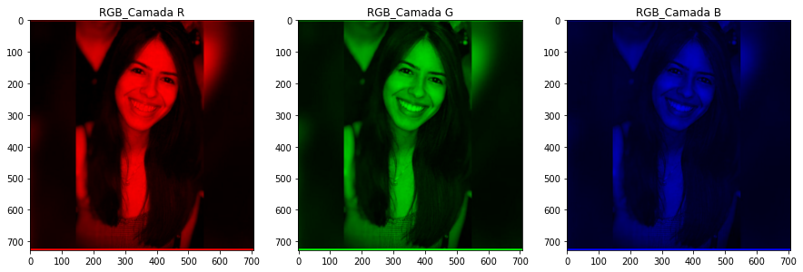
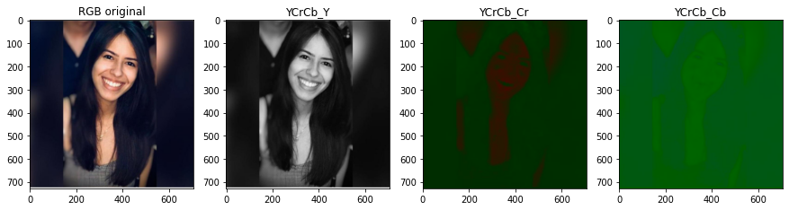
Sâmya
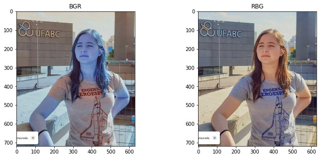
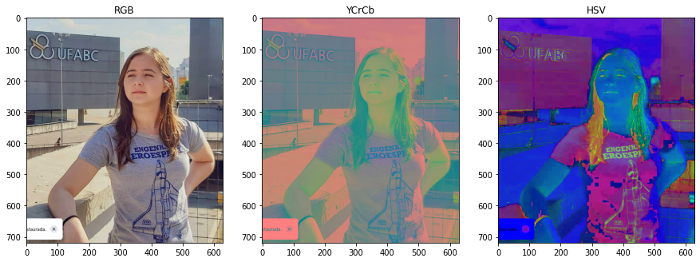
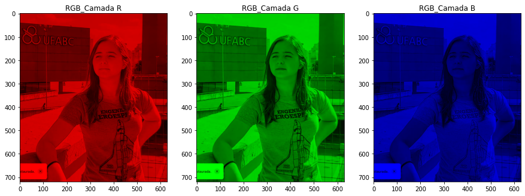
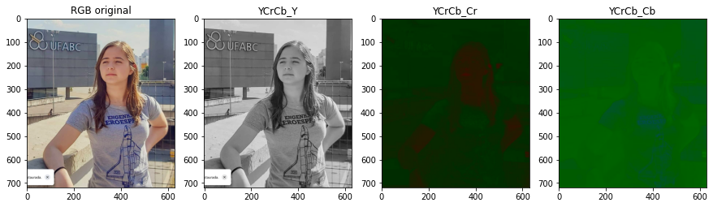
Caíque
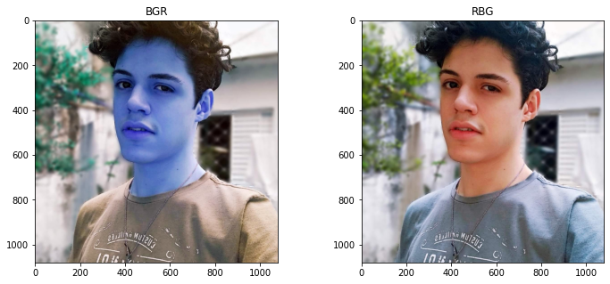
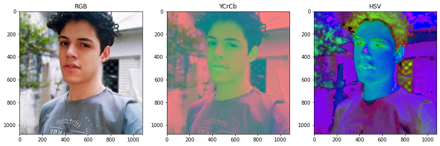
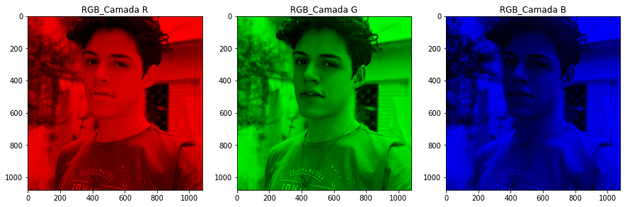
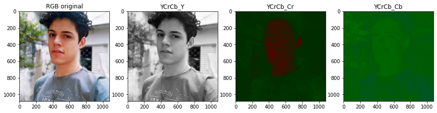
Arquivos comprimidos JPEG
Nesta etapa, foi utilizada as seguites funções para salvar as fotos com menor qualidade (fatores 25 e 5):
cv.imwrite('Img25.jpg', bgr, [cv.IMWRITE_JPEG_QUALITY, 25])
cv.imwrite('Img05.jpg', bgr, [cv.IMWRITE_JPEG_QUALITY, 5])
Do mesmo modo, foi utilizado para leitura, visualização e conversão para acertar a cor, as linhas de código abaixo:
bgr25 = cv.imread('Img25.jpg'); rgb25 = cv.cvtColor(bgr25, cv.COLOR_BGR2RGB)
bgr05 = cv.imread('Img05.jpg'); rgb05 = cv.cvtColor(bgr05, cv.COLOR_BGR2RGB)
Foto Montagem:
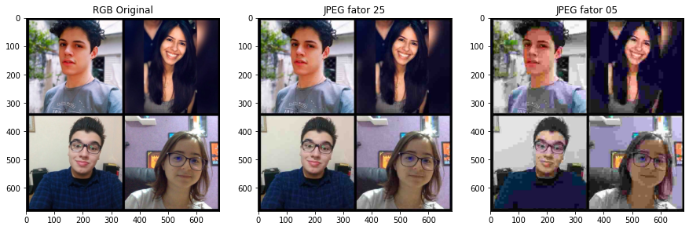
Individualmente:
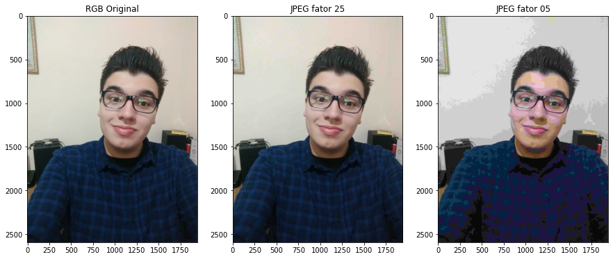
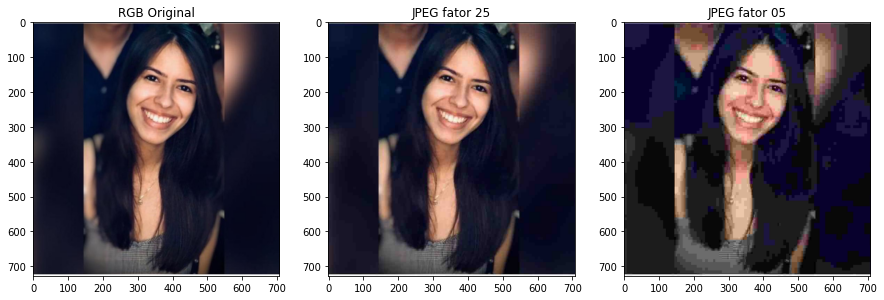
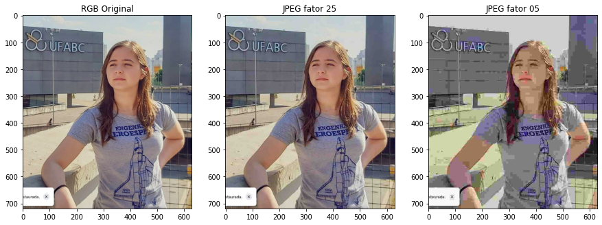
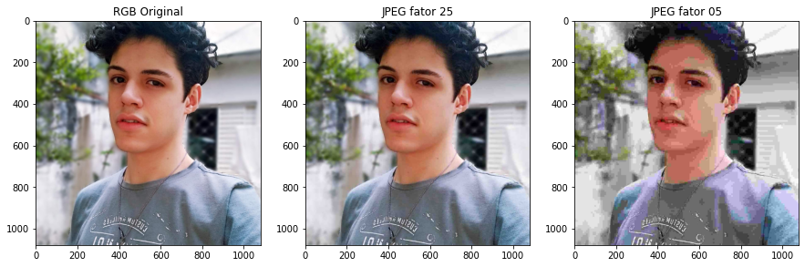
Tabela de comparação:

Compressão de imagem com DCT
Ao zerar manualmente a diagonal da DCT as componentes AC, o Bloco Original e Reconstruído com Zeros das componentes AC da diagonal para baixo zerados pode ser visualizado na imagem a seguir:
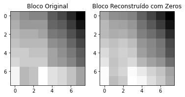
Escolhendo outro bloco de 8x8 na imagem e refazendo o procedimento anterior zerando mais DUAS DIAGONAIS ACIMA DA PRINCIPAL, encontramos a imagem a seguir:
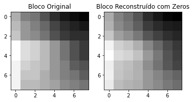
Link do Notebook